# RuoYi 框架
RuoYi（若依）是一款基于 Spring Boot 等主流技术栈、提供代码生成器和完整权限管理功能的 Java 开源快速开发平台，旨在帮助开发者快速构建企业级后台管理系统。
通过 gitee 即可获取源码：https://gitee.com/y_project/RuoYi-Vue
# 启动
# 创建数据库并导入
目前我这个是 3.9.x 版本的，用这个脚本导入：ry_20260417.sql
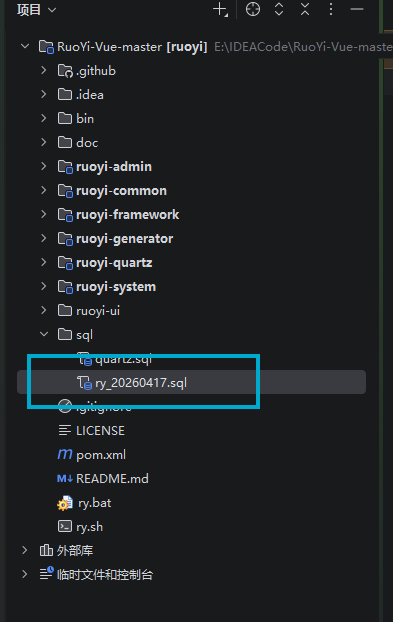
完成之后：
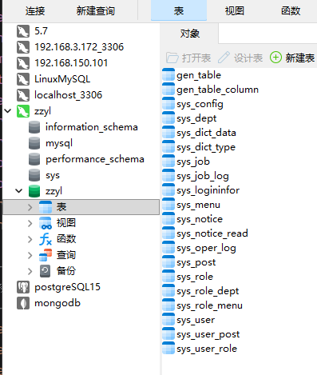
# 修改 MySQL 数据库连接信息
修改连接池的地址、库名和密码
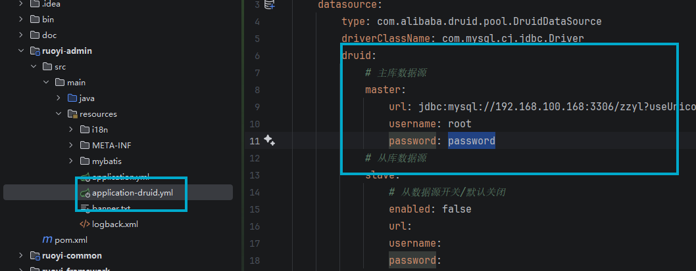
# 修改 Redis 数据库连接信息
修改连接的地址和密码
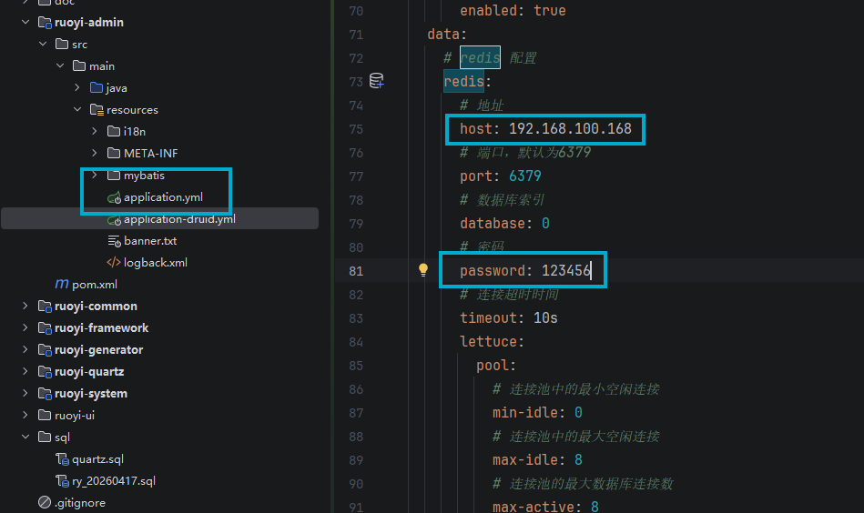
# 启动后端
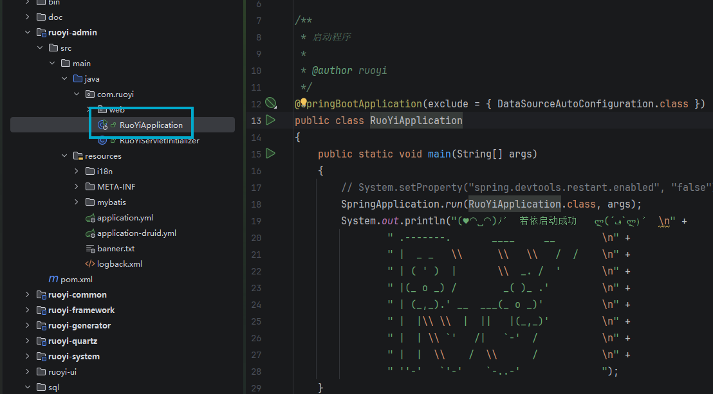
# 前端的安装与修改
- 安装 NPM 包
- 修改与后端的连接地址
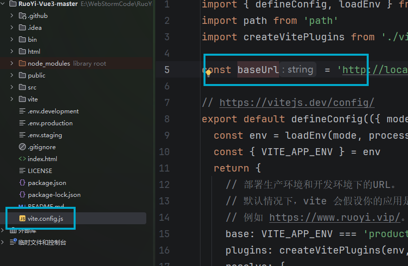
# 端口占用错误
error when starting dev server:
Error: listen EACCES: permission denied 0.0.0.0:80
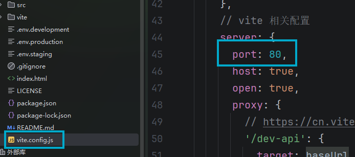
可以修改为 8081
# 启动前端
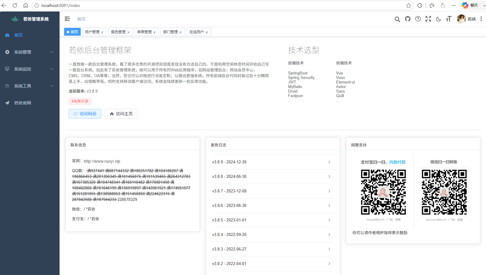
# 认识 RuoYi 的结构
RuoYi-Vue-master/ | |
├── .github/ # GitHub 相关配置（如 Issue 模板） | |
├── .idea/ # IDEA 编辑器配置文件（可忽略） | |
├── bin/ # 启动脚本目录（Windows/Linux 启动、停止脚本） | |
├── doc/ # 项目文档（如 SQL 脚本、部署文档等） | |
├── ruoyi-admin/ # 核心启动模块（Controller + 启动类） | |
├── ruoyi-common/ # 公共工具模块（工具类、常量、异常等） | |
├── ruoyi-framework/ # 框架核心模块（配置、拦截器、安全等） | |
├── ruoyi-generator/ # 代码生成器模块（自动生成前后端代码） | |
├── ruoyi-quartz/ # 定时任务模块（基于 Quartz 调度） | |
├── ruoyi-system/ # 系统业务模块（用户、角色、菜单等 Mapper/Service） | |
├── ruoyi-ui/ # 前端 Vue 项目（若依的独立前端，但这里为空？） | |
├── sql/ # 数据库 SQL 脚本 | |
│ ├── quarze.sql # Quartz 定时任务表结构 | |
│ └── ry_20260417.sql # 若依核心业务表结构及初始数据 | |
├── LICENSE # 开源协议（MIT） | |
├── pom.xml # Maven 父 POM（依赖管理） | |
├── README.md # 项目说明文档 | |
├── ry.bat # Windows 启动脚本 | |
└── ry.sh # Linux/Mac 启动脚本 |
# 了解 3.9.x 的其他集成版本
| 属性名 | 值 | 说明 |
|---|---|---|
java.version |
17 |
JDK 版本要求 |
spring-boot.version |
4.0.6 |
Spring Boot 版本 |
ruoyi.version |
3.9.2 |
项目自身版本号 |
druid.version |
1.2.28 |
阿里 Druid 连接池版本 |
pagehelper.boot.version |
4.1.0 |
分页插件版本 |
fastjson.version |
2.0.62 |
阿里 Fastjson2 版本 |
jwt.version |
0.9.1 |
JWT 工具 |
springdoc.version |
3.0.3 |
SpringDoc（Swagger 替代）版本 |
# 数据库主从配置
druid: | |
# 主库数据源 | |
master: | |
url: jdbc:mysql://192.168.100.168:3306/zzyl?useUnicode=true&characterEncoding=utf8&zeroDateTimeBehavior=convertToNull&useSSL=true&serverTimezone=GMT%2B8 | |
username: root | |
password: heima123 | |
# 从库数据源 | |
slave: | |
# 从数据源开关 / 默认关闭 | |
enabled: false | |
url: | |
username: | |
password: |
# 鉴权
package com.ruoyi.framework.web.service; | |
import java.util.Set; | |
import org.springframework.stereotype.Service; | |
import org.springframework.util.CollectionUtils; | |
import com.ruoyi.common.constant.Constants; | |
import com.ruoyi.common.core.domain.entity.SysRole; | |
import com.ruoyi.common.core.domain.model.LoginUser; | |
import com.ruoyi.common.utils.SecurityUtils; | |
import com.ruoyi.common.utils.StringUtils; | |
import com.ruoyi.framework.security.context.PermissionContextHolder; | |
/** | |
* RuoYi 首创 自定义权限实现，ss 取自 SpringSecurity 首字母 | |
* | |
* @author ruoyi | |
*/ | |
@Service("ss") | |
public class PermissionService | |
{ | |
/** | |
* 验证用户是否具备某权限 | |
* | |
* @param permission 权限字符串 | |
* @return 用户是否具备某权限 | |
*/ | |
public boolean hasPermi(String permission) | |
{ | |
if (StringUtils.isEmpty(permission)) | |
{ | |
return false; | |
} | |
LoginUser loginUser = SecurityUtils.getLoginUser(); | |
if (StringUtils.isNull(loginUser) || CollectionUtils.isEmpty(loginUser.getPermissions())) | |
{ | |
return false; | |
} | |
PermissionContextHolder.setContext(permission); | |
return hasPermissions(loginUser.getPermissions(), permission); | |
} | |
/** | |
* 验证用户是否不具备某权限，与 hasPermi 逻辑相反 | |
* | |
* @param permission 权限字符串 | |
* @return 用户是否不具备某权限 | |
*/ | |
public boolean lacksPermi(String permission) | |
{ | |
return hasPermi(permission) != true; | |
} | |
/** | |
* 验证用户是否具有以下任意一个权限 | |
* | |
* @param permissions 以 PERMISSION_DELIMITER 为分隔符的权限列表 | |
* @return 用户是否具有以下任意一个权限 | |
*/ | |
public boolean hasAnyPermi(String permissions) | |
{ | |
if (StringUtils.isEmpty(permissions)) | |
{ | |
return false; | |
} | |
LoginUser loginUser = SecurityUtils.getLoginUser(); | |
if (StringUtils.isNull(loginUser) || CollectionUtils.isEmpty(loginUser.getPermissions())) | |
{ | |
return false; | |
} | |
PermissionContextHolder.setContext(permissions); | |
Set<String> authorities = loginUser.getPermissions(); | |
for (String permission : permissions.split(Constants.PERMISSION_DELIMITER)) | |
{ | |
if (permission != null && hasPermissions(authorities, permission)) | |
{ | |
return true; | |
} | |
} | |
return false; | |
} | |
/** | |
* 判断用户是否拥有某个角色 | |
* | |
* @param role 角色字符串 | |
* @return 用户是否具备某角色 | |
*/ | |
public boolean hasRole(String role) | |
{ | |
if (StringUtils.isEmpty(role)) | |
{ | |
return false; | |
} | |
LoginUser loginUser = SecurityUtils.getLoginUser(); | |
if (StringUtils.isNull(loginUser) || CollectionUtils.isEmpty(loginUser.getUser().getRoles())) | |
{ | |
return false; | |
} | |
for (SysRole sysRole : loginUser.getUser().getRoles()) | |
{ | |
String roleKey = sysRole.getRoleKey(); | |
if (Constants.SUPER_ADMIN.equals(roleKey) || roleKey.equals(StringUtils.trim(role))) | |
{ | |
return true; | |
} | |
} | |
return false; | |
} | |
/** | |
* 验证用户是否不具备某角色，与 isRole 逻辑相反。 | |
* | |
* @param role 角色名称 | |
* @return 用户是否不具备某角色 | |
*/ | |
public boolean lacksRole(String role) | |
{ | |
return hasRole(role) != true; | |
} | |
/** | |
* 验证用户是否具有以下任意一个角色 | |
* | |
* @param roles 以 ROLE_DELIMITER 为分隔符的角色列表 | |
* @return 用户是否具有以下任意一个角色 | |
*/ | |
public boolean hasAnyRoles(String roles) | |
{ | |
if (StringUtils.isEmpty(roles)) | |
{ | |
return false; | |
} | |
LoginUser loginUser = SecurityUtils.getLoginUser(); | |
if (StringUtils.isNull(loginUser) || CollectionUtils.isEmpty(loginUser.getUser().getRoles())) | |
{ | |
return false; | |
} | |
for (String role : roles.split(Constants.ROLE_DELIMITER)) | |
{ | |
if (hasRole(role)) | |
{ | |
return true; | |
} | |
} | |
return false; | |
} | |
/** | |
* 判断是否包含权限 | |
* | |
* @param permissions 权限列表 | |
* @param permission 权限字符串 | |
* @return 用户是否具备某权限 | |
*/ | |
private boolean hasPermissions(Set<String> permissions, String permission) | |
{ | |
return permissions.contains(Constants.ALL_PERMISSION) || permissions.contains(StringUtils.trim(permission)); | |
} | |
} |
接口鉴权实例：
@Log(title = "登录日志", businessType = BusinessType.EXPORT) | |
@PreAuthorize("@ss.hasPermi('monitor:logininfor:export')") | |
@PostMapping("/export") | |
public void export(HttpServletResponse response, SysLogininfor logininfor) | |
{ | |
List<SysLogininfor> list = logininforService.selectLogininforList(logininfor); | |
ExcelUtil<SysLogininfor> util = new ExcelUtil<SysLogininfor>(SysLogininfor.class); | |
util.exportExcel(response, list, "登录日志"); | |
} |
# 数据表
| 表名 | 说明 | 关系 |
|---|---|---|
| gen_table | 代码生成业务表 | 代码生成 |
| gen_table_column | 代码生成业务表字段 | |
| sys_config | 参数配置表 | 数据字典 |
| sys_dict_data | 字典数据表 | |
| sys_dict_type | 字典类型表 | |
| sys_job | 定时任务调度表 | 定时任务 |
| sys_job_log | 定时任务调度日志表 | |
| sys_logininfor | 系统访问记录 | 日志 |
| sys_oper_log | 操作日志记录 | |
| sys_notice | 通知公告表 | |
| sys_menu | 菜单表 | 权限 |
| sys_dept | 部门表 | |
| sys_post | 岗位信息表 | |
| sys_role | 角色信息表 | |
| sys_role_dept | 角色和部门关联表 | |
| sys_role_menu | 角色和菜单关联表 | |
| sys_user | 用户信息表 | |
| sys_user_post | 用户与岗位关联表 | |
| sys_user_role | 用户和角色关联表 |
主要这里围绕着鉴权和日志展开，其他的是作为辅助增强功能
# 基于单表代码生成的快速开发
通常我们一个人或者一个小型团队开发一个全栈项目（对于我来说还是一个人），一般是先开发后端接口，然后修改前端代码，这样是很有逻辑感的的一个过程。RuoYi 框架对于个人或者小型团队来讲，直接颠覆了传统的开发范式。
下面我们一起看看，如何通过 RuoYi 框架进行单表快速开发（为什么单表？因为单表一般是 CRUD，没有很强的业务逻辑，对于标准流程来说非常适用）
# 添加母菜单
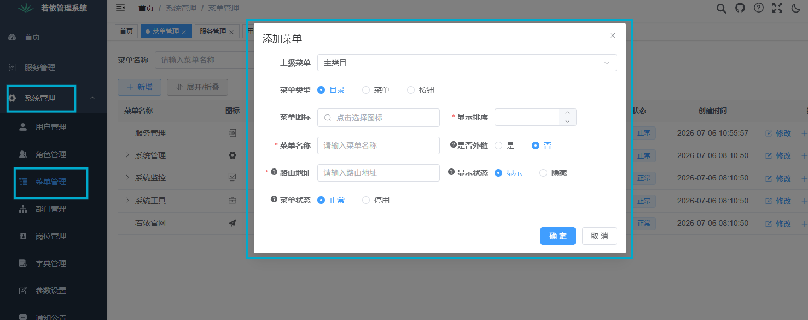
# 表的导入
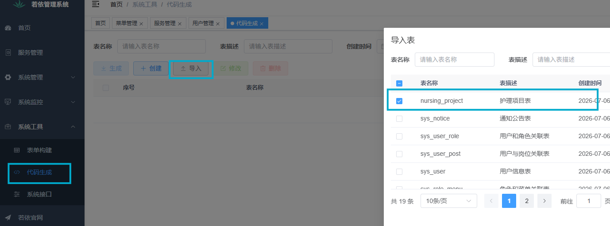
# 表的微调
这里在创建日期，更新日期一般由数据库自动完成，我们可以取消勾选，还有就是一些条件查询项目，比如说我们要根据名称查询啊，根据状态查询啊，可以把他勾上，其他的倒是可以取消勾选了。再有就是 int 型他这里识别对成了 Long 当然也是可以用的，这里我们还是改一下。最后是 id 列也是自动生成的，不需要插入。
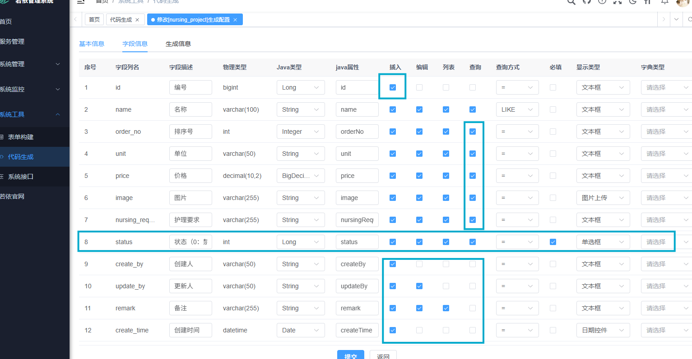
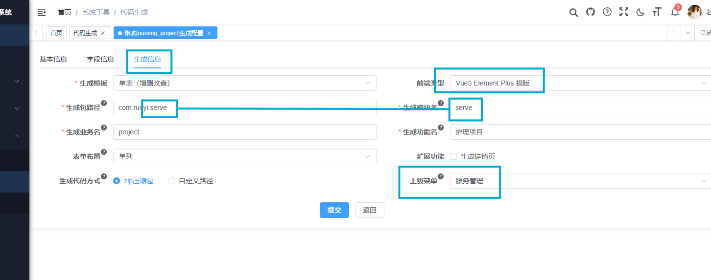
然后就会生成这个压缩包：
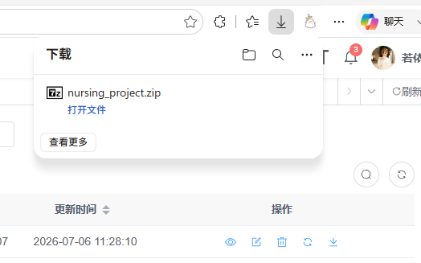
解压后得到这个三个东西：
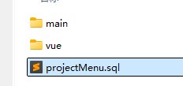
# 如何使用生成的内容
- 执行 SQL 脚本
- 将 main 下内容放到后端，这里放在了 ruoyi-admin 里
- 将 vue 下的内容放在前端
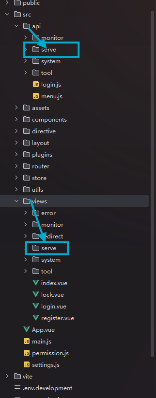
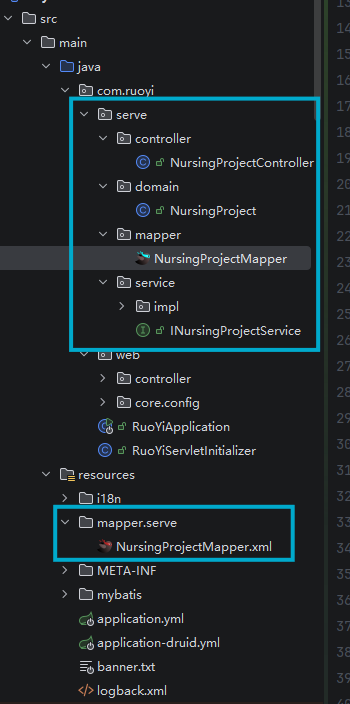
此时重启后端，单表 CRUD 开发就结束了。
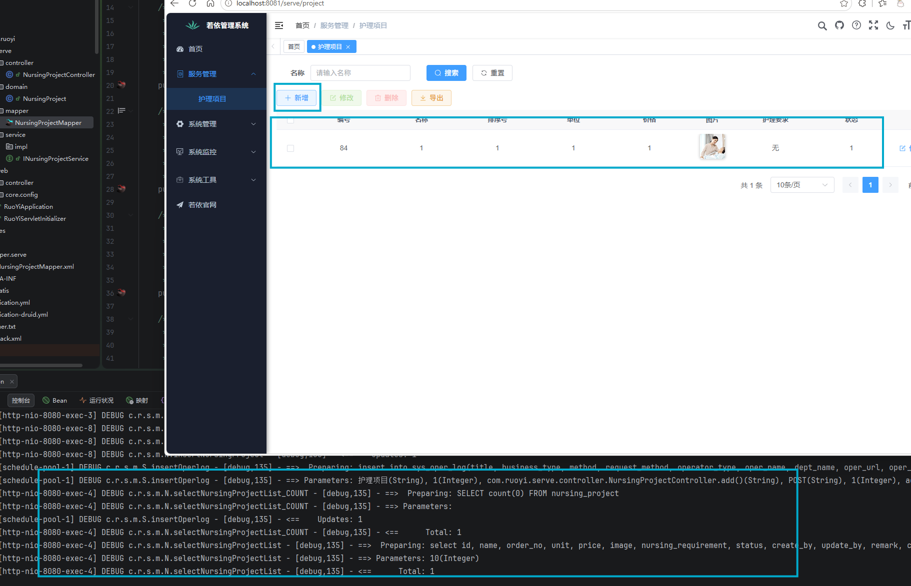
更新表单日志：
19:59:01.129 [http-nio-8080-exec-16] DEBUG c.r.s.m.N.updateNursingProject - [debug,135] - ==> Preparing: update nursing_project SET name = ?, order_no = ?, unit = ?, price = ?, image = ?, nursing_requirement = ?, status = ?, create_time = ?, update_time = ? where id = ? | |
19:59:01.131 [http-nio-8080-exec-16] DEBUG c.r.s.m.N.updateNursingProject - [debug,135] - ==> Parameters: 3(String), 2(Integer), 1(String), 1(BigDecimal), /profile/upload/2026/07/06/翻身拍背@2x_20260706195627A001.png(String), 无(String), 1(Integer), 2026-07-06 19:56:35.0(Timestamp), 2026-07-06 19:59:01.128(Timestamp), 84(Long) | |
19:59:01.137 [http-nio-8080-exec-16] DEBUG c.r.s.m.N.updateNursingProject - [debug,135] - <== Updates: 1 | |
19:59:01.151 [schedule-pool-2] DEBUG c.r.s.m.S.insertOperlog - [debug,135] - ==> Preparing: insert into sys_oper_log(title, business_type, method, request_method, operator_type, oper_name, dept_name, oper_url, oper_ip, oper_location, oper_param, json_result, status, error_msg, cost_time, oper_time) values (?, ?, ?, ?, ?, ?, ?, ?, ?, ?, ?, ?, ?, ?, ?, sysdate()) | |
19:59:01.152 [schedule-pool-2] DEBUG c.r.s.m.S.insertOperlog - [debug,135] - ==> Parameters: 护理项目(String), 2(Integer), com.ruoyi.serve.controller.NursingProjectController.edit()(String), PUT(String), 1(Integer), admin(String), 研发部门(String), /serve/project(String), 127.0.0.1(String), 内网IP(String), {"createTime":"2026-07-06 19:56:35","id":84,"image":"/profile/upload/2026/07/06/翻身拍背@2x_20260706195627A001.png","name":"3","nursingRequirement":"无","orderNo":2,"params":{},"price":1,"status":1,"unit":"1","updateTime":"2026-07-06 19:59:01"} (String), {"msg":"操作成功","code":200}(String), 0(Integer), null, 9(Long) | |
19:59:01.158 [schedule-pool-2] DEBUG c.r.s.m.S.insertOperlog - [debug,135] - <== Updates: 1 | |
19:59:01.163 [http-nio-8080-exec-17] DEBUG c.r.s.m.N.selectNursingProjectList_COUNT - [debug,135] - ==> Preparing: SELECT count(0) FROM nursing_project | |
19:59:01.164 [http-nio-8080-exec-17] DEBUG c.r.s.m.N.selectNursingProjectList_COUNT - [debug,135] - ==> Parameters: | |
19:59:01.172 [http-nio-8080-exec-17] DEBUG c.r.s.m.N.selectNursingProjectList_COUNT - [debug,135] - <== Total: 1 | |
19:59:01.175 [http-nio-8080-exec-17] DEBUG c.r.s.m.N.selectNursingProjectList - [debug,135] - ==> Preparing: select id, name, order_no, unit, price, image, nursing_requirement, status, create_by, update_by, remark, create_time, update_time from nursing_project LIMIT ? | |
19:59:01.176 [http-nio-8080-exec-17] DEBUG c.r.s.m.N.selectNursingProjectList - [debug,135] - ==> Parameters: 10(Integer) | |
19:59:01.179 [http-nio-8080-exec-17] DEBUG c.r.s.m.N.selectNursingProjectList - [debug,135] - <== Total: 1 |
伟大，无需多言。
# 集成 Knife4j 实现 Swagger 文档增强
官方文档：https://doc.ruoyi.vip/ruoyi-vue/document/cjjc.html# 集成 knife4j 实现 swagger 文档增强
ruoyi-springboot3/springdoc 版本 用 knife4j-openapi3-jakarta-spring-boot-starter 依赖
<!-- ruoyi-springboot3 /springdoc knife4j 配置 --> | |
<dependency> | |
<groupId>com.github.xiaoymin</groupId> | |
<artifactId>knife4j-openapi3-jakarta-spring-boot-starter</artifactId> | |
<version>4.4.0</version> | |
</dependency> |
knife4j 简单配置
knife4j: | |
enable: true | |
production: false | |
basic: | |
enable: false | |
username: ruoyi | |
password: 123456 | |
setting: | |
swagger-model-name: 实体类列表 |
配置静态资源 /webjars/**, /doc.html 匿名访问
.requestMatchers("/webjars/**", "/doc.html").permitAll() |
修改 ry-ui\views\tool\swagger\index.vue 跳转地址
src: process.env.VUE_APP_BASE_API + "/doc.html |